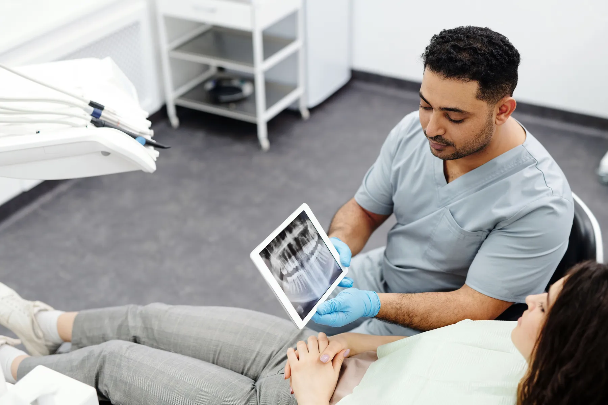
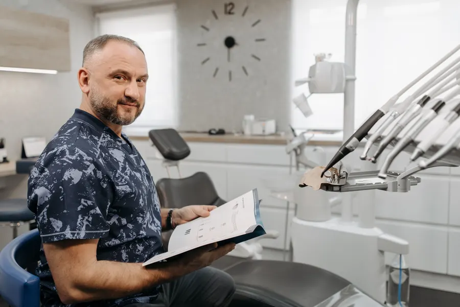
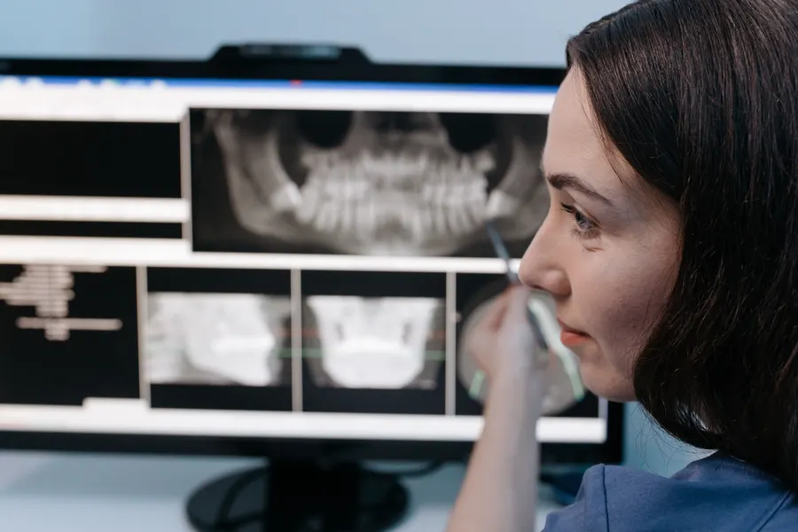
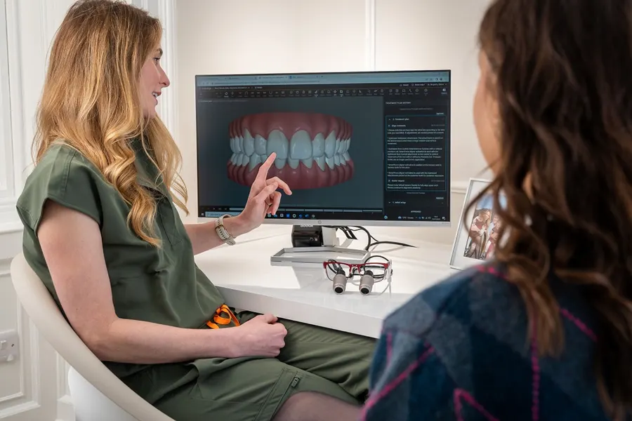

Rahat bir muayene, anlaşılır bir plan.
Her tedavinin nasıl ilerlediğini önceden okuyun; randevu notunuzu seçerek hazırlayın, WhatsApp'tan tek dokunuşla gönderin.

Koltuğa oturmadan önce.
İlk gelişte neler olduğunu bilmek insanı rahatlatır. Yayında bu üç kare sizin kliniğinizde çekilir.

01 · KonuşmaÖnce dinleriz
Şikâyetiniz, kullandığınız ilaçlar ve varsa eski röntgenleriniz konuşulur.

02 · İncelemeMuayene ve röntgen
Ağız içi incelenir; gerekirse röntgen çekilir ve ekranda birlikte bakılır.

03 · PlanSeçenekler
Tedavi seçenekleri ve sırası anlatılır; karar birlikte verilir.
Altı başlık, sade anlatım.
Başlıklar Instagram'daki öne çıkanlarınızdan. Metinler genel bilgilendirmedir; yayındaki metinleri siz onaylarsınız.
Sayfada fiyat, kampanya, hasta yorumu ya da öncesi-sonrası görsel yer almaz. Tedavi seçenekleri muayenede konuşulur.
Seçin, not yazılsın.
Konuyu, size uygun zamanı ve ilk kez gelip gelmediğinizi seçin. Mesaj kendiliğinden yazılır; WhatsApp'ta yalnızca göndermeniz kalır. Klinik uygun gün ve saati size yazar.
Acil ağrıda mesaj yerine arayın: 0543 450 20 00
Aydınlık, sade, düzenli.
Fotoğraflar temsilîdir; yayında kliniğinizin kendi fotoğrafları durur. Fotoğrafa dokunun, büyüsün.
Aklınıza takılanlar.
Randevuyu nasıl alırım?
Randevu bölümünde konuyu ve size uygun zamanı seçin; WhatsApp mesajı hazır açılır. Klinik uygun gün ve saati size yazar. Telefonla da arayabilirsiniz: 0543 450 20 00.
İlk muayeneye ne getirmeliyim?
Kullandığınız ilaçları, varsa sağlık raporlarınızı ve daha önce çekilmiş diş röntgenlerinizi.
Muayenede ne olur?
Ağız içi incelenir, gerekirse röntgen çekilir ve tedavi seçenekleri sizinle konuşulur.
Tedavi ne kadar sürer?
Tedaviye ve kişiye göre değişir; süre muayeneden sonra planla birlikte konuşulur.
Acil ağrıda ne yapmalıyım?
Mesaj yerine telefonla arayın: 0543 450 20 00.
Yenişehir'de, Yusuf Batur Caddesi'nde.
- Adres
- Yenişehir Mah., Şehit Öğretmen Yusuf Batur Cad. No:63/1, Merkezefendi / Denizli
- Telefon · WhatsApp
- 0543 450 20 00
- E-posta
- dtbatuhanbas@gmail.com
- Çalışma saatleri
- Sizden alınıp eklenecek